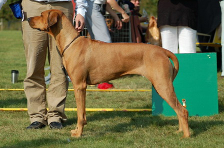

INT&NORDUCH, S VCH, LP1, LP2 Stenänga Ghali Batuuli
Mira was born on September 15, 2002. Mira was born as a puppy no. 12. Mira has 5 brothers and 7 sisters. Together they are Stenänga's B-litter (B-kull). Mira's father is INTUCH, VDHCH Lionhunt Dayimane Umvuma and mother is Madahiro's GoodEnoughFärg/Coulor:...............................Rödvete, Red wheat Född/Date of birth:.....................2002-09-15
Höjd/Height:...............................68 cm
Vikt/Weight:................................41 kg
HD:.............................................B
AD:.............................................UA Tänder/TeethFulltandad, korrekt saxbett, Full toothed, correkt scissors bite
MH/Mentally tested:...................Känd mentalstatus, Skottsäker, Knewn mental health, gun shoot proof.
Utställd/Shows:...........................NuCh, IntCh
Lydnadstävling/Obidience:.........LP1, LP2, OP1, OP2
Viltspår/Field trail:......................SvCH, Swedich field tracking champion
Uppfödare/Breeder:....................Kennel Stenänga, Margaretha & Lars-Gunnar Lantz
pedigree
| Stenänga Ghali Batuuli | INTUCH VDHCH Lionhunt Dayimane Umvuma | Glenaholm Brigandman | Namandla Khebha Of Lionhill |
| Glenaholm Banna | |||
| Ishara Tuli Yankee Of Lionhunt | Lionhill Tristan | ||
| Calico Ridge Buisa Of Ishara | |||
| Madahiro´s Good Enough | FINUCH GBCH INTUCH NORDUCH NORDV-99 VDHCH Aakemba King Astor Gi'fumo | AUCH Marsabit Mfumo |
|
| INTUCH NORDUCH Simbashana's Givenchy Madahiro's R' Zafaco Millie |
|||
| Madahiro´s Good Enough | Ridgehunter's Argo Tiko | ||
| NUCH SUCH Aithea Lionsmaragd Zafaco |